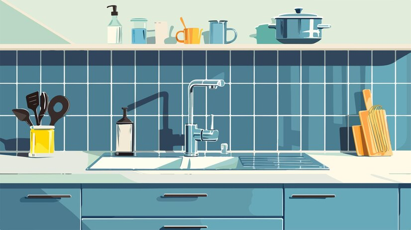

Sinks R Us
Your one-stop shop for all types of sinks

About Our Sinks
At Sinks R Us, we offer a wide variety of sinks to suit every need. From classic designs to modern styles, our sinks are made from high-quality materials and built to last.

Types of Sinks
Explore our extensive range of sinks, including undermount, farmhouse, and vessel sinks. Each type comes with its own unique features and benefits to match your kitchen or bathroom design.

Features and Benefits
Our sinks come with a range of features, including easy-to-clean surfaces, scratch resistance, and various styles to complement your decor. Learn more about what makes our sinks stand out.